文 无法登录scott用户的问题的原因和解决方法
一、前言
最近电脑上安装了oracle 12c数据库，想体验下新特性。安装完后，便像11g一样在dos窗口进行下面的操作:
sqlplus / as sysdba
SQL> conn scott/tiger
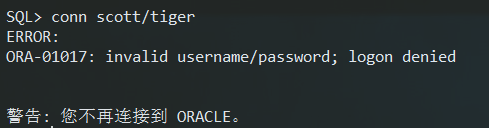
网上有许多 @H:\app\oracleuser\product\12.1.0\db_1\RDBMS\ADMIN\scott.sql 的解决方案，发现于我并没有什么卵用
于是乎进行了以下尝试：
SQL> alter user scott account unlock identified by tiger;
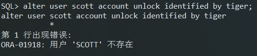
神马情况！难道没有SCOTT用户？用sql查了下，确实没查到（不是没有）：
SQL> select username from dba_users where username like 'SCOTT';
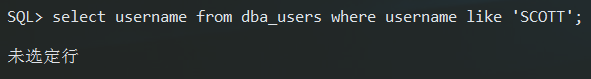
哦，那我就自己建个吧（当时想多了o.o):
SQL> create user scott identified by tiger;
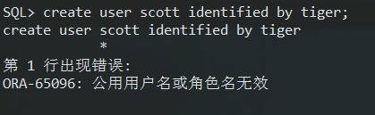
，，，，，，
呵呵，刚刚接触12c的新手估计都会犯这样的错误吧。其实oracle 12c在结构上做出了调整，引入了CDB和PDB的概念。具体可以看下潇湘隐者的文章：
http://www.cnblogs.com/kerrycode/p/3386917.html
其实，我刚才的操作是在CDB中的操作，用sys默认登录的是CDB,但是如果想在CDB中创建用户（可以理解为公共用户）的话，那么必须在用户名前面加上“c##”：
SQL> create user c##joker identified by joker;
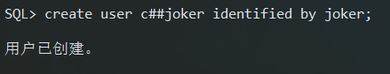
oracle 这么做的目的是为了区分CDB的用户（前面带“c##”的用户）和PDB用户。那么问题来了，如何使用普通用户呢？网上查阅了很多资料，但都是说不清楚，今天总结下吧。
二、使用普通用户
其实，oracle 12c的普通用户必须在PDB下使用，PDB可以自己创建，也可以使用12c自带的。首先，查看下12c自带的PDB吧：
SQL> select con_id, dbid, guid, name , open_mode from v$pdbs;
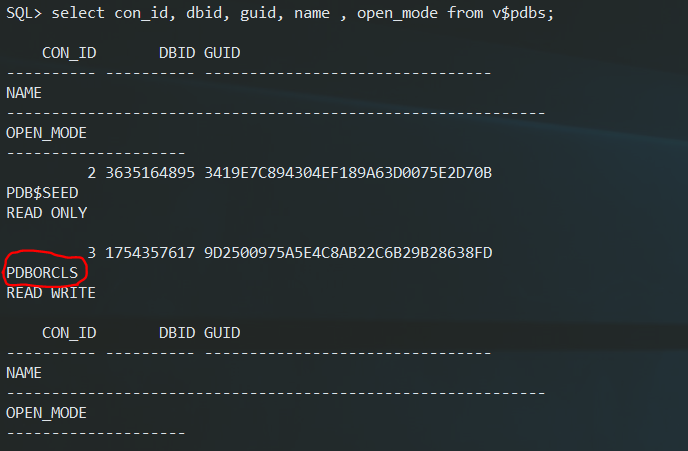
要想链接到PDBORCLS，必须要在\app\oracleuser\product\12.1.0\db_1\NETWORK\ADMIN\tns.ora文件下加入如下内容：
PDBORCLS =
(DESCRIPTION =
(ADDRESS = (PROTOCOL = TCP)(HOST = localhost)(PORT = 1521))
(CONNECT_DATA =
(SERVER = DEDICATED)
(SERVICE_NAME = PDBORCLS)
)
)
这样，我们就可以链接PDBORCLS了
首先，要启动PDBORCLS，先用sys登录到CDB，进行如下操作：
SQL> alter session set container = PDBORCLS;
SQL> STARTUP
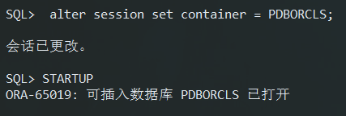
这样我们就可以用sys登录到PDBORCLS了：
SQL> conn sys@pdborcls/admin as sysdba
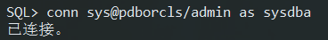
我们查一下用没有SCOTT用户：
SQL> select username from dba_users where username like '%SCOTT%';
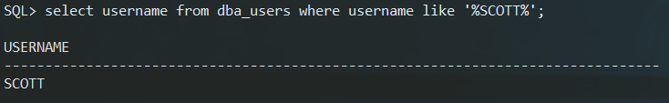
原来，SCOTT在PDBORCLS下。
SQL> alter user scott account unlock identified by tiger;
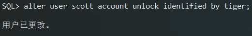
SQL> conn scott@pdborcls/tiger
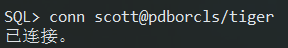
SQL> select ename,empno,job from emp offset 5 rows fetch next 5 rows only;
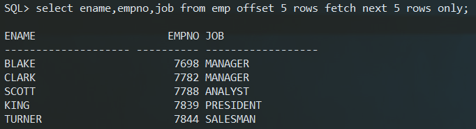
这样，我们就可以像11g那样使用像scott这样的普通用户了！
三、自动启动PDB
我们可以通过创建触发器的方式来自动启动PDB，用不着每次还得先用sys登录CDB,然后启动PDB。触发器代码如下：
SQL> CREATE OR REPLACE TRIGGER open_all_pdbs
2 AFTER STARTUP
3 ON DATABASE
4 BEGIN
5 EXECUTE IMMEDIATE 'alter pluggable database all open';
6 END open_all_pdbs;
7 /
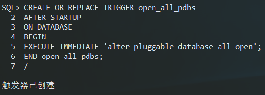
SQL> shutdown immediate
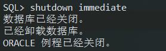
SQL> startup
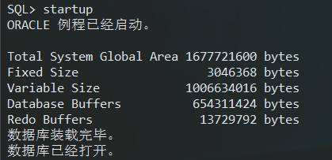
SQL> conn scott@pdborcls/tiger
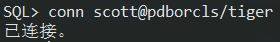
关于限制模式(restrict mode)的问题可以参见这篇博客~
关于：无法连接到数据库实例: ORA-01035: ORACLE only available to users with RESTRICTED SESSION privilege
参考博客： http://www.th7.cn/db/Oracle/201508/114999.shtml